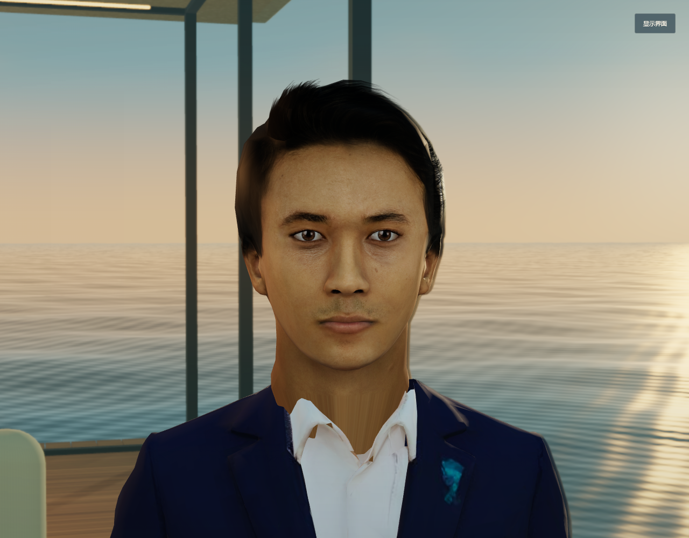
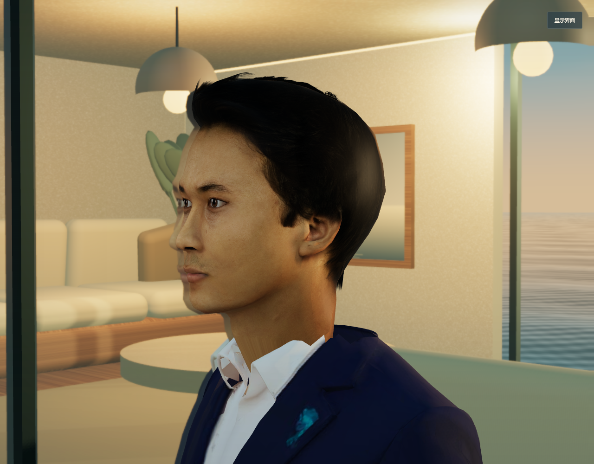
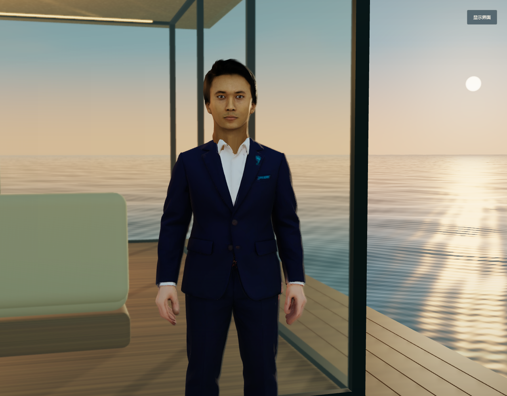

此页是已停止的换头稿。
用户明确要求保留自己的0597头部，只参考微软模型的面部调整与驱动方式。当前已回到自有头部并接入眨眼、视线和中文讲解。进入当前版本 ↗
历史对照：微软成熟头部。
3.5 静态对照稿 · 尚未接入语音、口型或自动表情这轮采用上个演示中的微软 Rocketbox Male Adult 10 头部、皮肤贴图、眼睛和面部权重，保留 0597 的身体与深蓝西装。脸型和发型已经改变，请把它作为成熟人物结构的效果基线。以下全部来自实际网页，同一站姿、同一光照、对应机位。
先看脸部与眼神


侧面接合与整体画面


向导应该能正常说话吗？
应该。目标是能看向你、自然眨眼、用中文讲解，并在打断时让声音与嘴部一起停下。当前先验证静态头部，下面明确区分已有结构与还要接入的驱动。
| 能力 | 模板与本轮已有 | 接下来需要 |
|---|---|---|
| 眼神与眨眼 | 原作者眼球、上下眼睑、眉毛骨骼及面部权重。 | 校准注视目标、眨眼幅度与自然节奏，近景和侧面都检查。 |
| 嘴型与表情 | 下颌、上下唇、嘴角、舌部骨骼与蒙皮。本机模型没有现成的口型形态键。 | 接入口型和表情形态，校准闭唇、张口、圆唇及牙齿遮挡。 |
| 中文语音同步 | 此稿尚未接入语音播放或语音驱动。 | 音频与口型共用时间轴，验证停顿、音节、字幕和打断恢复。 |
微软官方库另有口型与表情版本；配套 Headbox提供口型与面部表情模板。本轮没有把官方具备这些模板写成当前网页已能说话。
本轮状态：成熟头部已接入露台并保留面部蒙皮，静态检查优先。整体美术仍待验收，颈部接合、肤色协调、身体与双手仍有精修空间。
原始 0597、默认人物和上一轮修整稿均保留，默认入口继续使用原版本。头部及已有动作使用微软 Rocketbox 的 MIT 许可；0597 外观的权利独立。没有上传人物到外部服务。
这里是实际 3D 网页对照。点击入口后初始静止，拖动可检查。保留的五段身体动作不代表已经实现说话和面部表演。